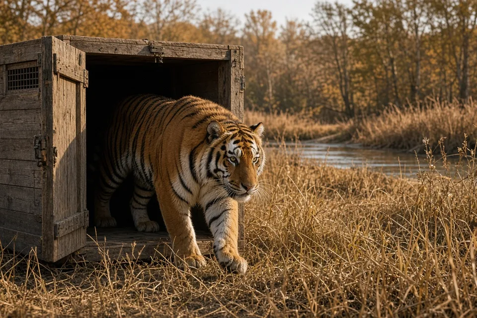
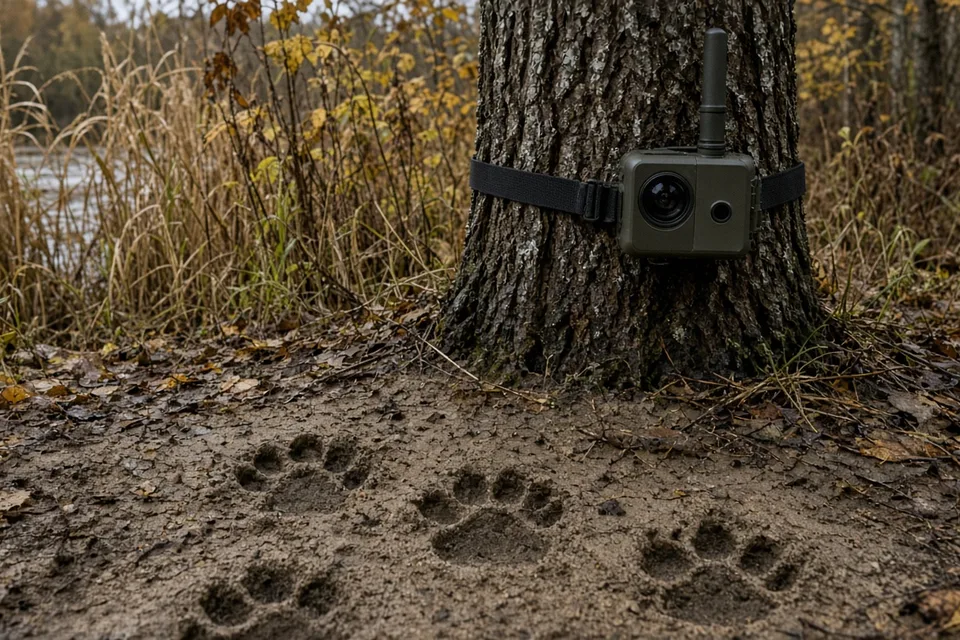

Home › Blog › Kazakhstan releases a second tiger into the wild
Kazakhstan releases a second tiger into the wild
On 31 October 2026, Kazakhstan released a male Amur tiger, named Amur, into the Ile-Balkhash State Nature Reserve near Lake Balkhash. He joins a tigress named Umit, released on 31 July. They are the first wild tigers in Kazakhstan in more than 70 years, and the release is the latest step in one of the most ambitious big cat reintroductions ever tried.
What happened
According to The Astana Times, the male tiger Amur was released on 31 October in the Ile-Balkhash State Nature Reserve in southeastern Kazakhstan. The release was attended by the country's Minister of Ecology and Natural Resources, Alibek Kuantyrov, and the head of Russia's Amur Tiger Centre, Sergei Aramilev, along with reserve staff and the reserve's anti-conflict team.
Amur is the second tiger set free under the programme. The first, a female named Umit, was released on 31 July 2026. Officials say Umit is exploring the territory and hunting on her own, and that her adaptation is going well.
The minister said the main goal is not just to return tigers to their old range, but to build a population that can live and breed independently in the wild.

Where the tigers came from
In May 2026, four Amur tigers caught in the wild in Russia's Khabarovsk Territory, two adults and two cubs, were brought to Kazakhstan and placed in acclimatisation enclosures inside the reserve. Wild born animals are a deliberate choice: tigers that grew up hunting real prey have the skills a captive bred cat would have to learn from scratch.
The two cubs are still under specialist care. A decision on releasing them will be made once they are old enough and pass the same checks as the adults.
How a tiger is judged ready
Before release, Amur lived in a large acclimatisation enclosure under continuous supervision. Specialists ran veterinary examinations and behavioural assessments, checking his health, his hunting skills, his ability to find food on his own and how he reacted to people. Only after those results were in was he cleared to go.
Both tigers wear satellite collars, so the team can follow their movements and see how they settle. That tracking matters most in the first months, when a newly released cat is learning a new landscape and setting up a territory. Tigers are solitary, and a male's range usually overlaps the ranges of one or more females; see how big is a tiger's territory?
Why tigers in Kazakhstan?
The Ili River delta and the southern shores of Lake Balkhash were once home to the Caspian, or Turanian, tiger. It lived in tugai, the dense riverside forests and reed beds of Central Asia, along rivers such as the Ili and the Syr Darya. The subspecies disappeared from Kazakhstan in the mid 20th century because of habitat loss, falling numbers of wild hoofed prey and hunting.
Genetic research has shown that the Caspian tiger and the Amur tiger are very closely related, which is why Amur tigers were chosen to fill the gap. In other words, this is not an exotic species being dropped into a new place: it is the closest living relative of the tiger that used to live there.
Prey first, tigers second
A tiger is only as safe as its food supply. Kazakhstan created the Ile-Balkhash reserve in 2018 and spent years restoring habitat and rebuilding the prey base before any tiger arrived. Bukhara deer and kulans, a wild ass, have been moved into the reserve; in September 2026, 30 kulans were relocated there from Altyn-Emel National Park.
That order of work reflects what researchers have found elsewhere: tiger numbers track prey numbers closely. A tigress raising cubs needs a steady supply of large prey, and a reserve without enough deer and wild pigs pushes tigers toward livestock and people. For more on diet, see what do tigers eat?

Keeping people and tigers safe
A dedicated anti-conflict team follows the tigers' movements, talks to local residents and responds to any incidents. The reserve's director, Kanat Kozhabekov, told The Astana Times that the release is only the start, and that the real work is the daily monitoring, protection and contact with local communities that follows.
Conflict prevention is the part of a reintroduction most likely to decide its success. A single attack on livestock or people can turn local opinion against a whole project, which is why teams like this one exist from day one.
Who is involved
The programme is run by Kazakhstan with Russia, through the Amur Tiger Centre, and with international conservation groups. WWF has supported work on the tugai forests, prey populations and reserve infrastructure, and Kazakhstan's ecology ministry signed a memorandum with WWF International in 2024 on further cooperation.
What to watch next
- Survival through winter. The first winter in the wild is a big test for any released predator.
- Overlap between Amur and Umit. A male whose range overlaps a female's is the first step toward wild born cubs.
- The two cubs. Their release, once they are old enough, would bring the founding group to four.
- More tigers. The long term goal is a self sustaining population in the Ili delta and southern Balkhash, which will need more releases over several years.
Wild tigers live today only in parts of South and Southeast Asia and the Russian Far East and northeast China. A breeding population in Central Asia would be the first return of the species to a region it was lost from on this scale. You can read more on our tiger page and big cat conservation.
Frequently asked questions
Are there tigers in Kazakhstan?
Yes, again. Two Amur tigers have been released into the Ile-Balkhash State Nature Reserve: the tigress Umit on 31 July 2026 and the male Amur on 31 October 2026.
Why were tigers extinct in Kazakhstan?
The Caspian tiger disappeared from Kazakhstan in the mid 20th century because of habitat loss, falling prey numbers and hunting.
Why use Amur tigers instead of Caspian tigers?
The Caspian tiger is extinct, and genetic research shows it was very closely related to the Amur tiger, so the Amur tiger is the nearest living match.
Where did Kazakhstan's tigers come from?
Four wild Amur tigers, two adults and two cubs, were caught in Russia's Khabarovsk Territory and brought to Kazakhstan in May 2026.
How are the released tigers monitored?
Both wear satellite collars, and an anti-conflict team tracks their movements and works with local residents.
Cite this page
APA: BigCatWise. (2026, November 3). Kazakhstan releases a second tiger into the wild. https://bigcatwise.com/blog/kazakhstan-releases-second-tiger.html
MLA: "Kazakhstan releases a second tiger into the wild." BigCatWise, 3 Nov. 2026, bigcatwise.com/blog/kazakhstan-releases-second-tiger.html.
Chicago: BigCatWise. "Kazakhstan releases a second tiger into the wild." Last modified November 3, 2026. https://bigcatwise.com/blog/kazakhstan-releases-second-tiger.html.
Please check the date you accessed the page and adjust to your teacher's or journal's style guide.
Sources
- The Astana Times (2 Nov 2026) Kazakhstan releases second tiger into wild as reintroduction program advances
- IUCN SSC Cat Specialist Group: Tiger
- WWF: Tiger
Figures are rounded summaries of the sources above. Wild populations are hard to count, so estimates change as new surveys are published.